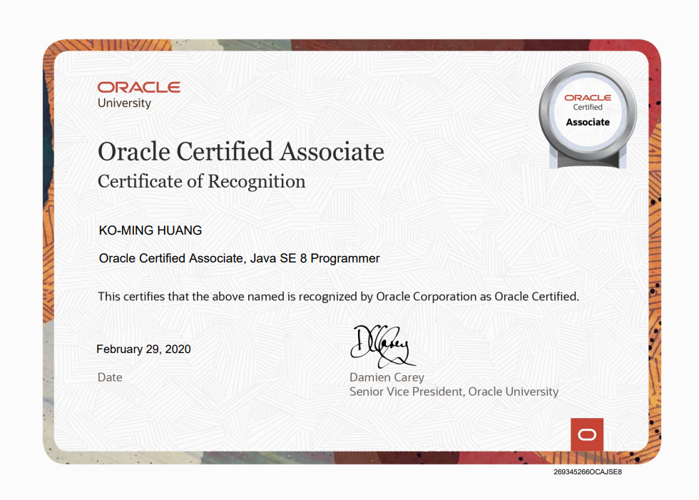

我是黃科洺 歡迎來到我的小小世界
這裡有更多關於自己的個人資訊，任何具有階段性或達到一定里程碑的作品都會放上來，紀錄自己成長軌跡的同時，也是在幫未來鋪路。
這裡有更多關於自己的個人資訊，任何具有階段性或達到一定里程碑的作品都會放上來，紀錄自己成長軌跡的同時，也是在幫未來鋪路。
我今年 26 歲，來自彰化。平時喜歡透過各式管道涉獵歷史，特別著迷於從不同時代的脈絡中觀察事件的演變，從政治、經濟到社會變遷，理解人事物如何隨時間推移而相互影響，這個過程讓我習慣以較長的時間尺度去思考問題。同時，我對股票投資與市場觀察也有濃厚興趣，會持續關注產業動態與長期趨勢，從產業變化與市場消息中尋找脈絡，這份興趣也培養了我對數據與資訊的敏感度。個性上，我謹慎、習慣未雨綢繆，做任何事情前會先假設可能的風險，並提前準備好應對方式，確保遇到挑戰也能保持冷靜、穩健應對。
大學初期對科系基礎課程感到相當陌生，學習過程一度吃力，但仍努力適應並累積基本功。直到大學中期接觸到程式實務應用課程後，逐漸燃起對程式的興趣，並在多方探索後，確立以網路爬蟲與資料分析作為發展主軸，研究所期間進一步深化相關技術能力。畢業進入職場後，由於工作環境中並無相關背景的同事，遇到問題時多半只能自行尋找解答；過程雖然辛苦，卻也養成我快速自學與獨立解決問題的能力。實務上主要負責整合與串接網站、APP 與市調問卷等各類數據，並進行視覺化與表格化呈現；資料處理完成後，再依據行銷與業務同仁的使用需求，規劃成雲端報表或網站應用提供使用。
熟悉資料串接與分析的完整實作流程，從資料蒐集、儲存、視覺化到雲端部署皆有實際經驗。實際運用的工具涵蓋以下面向：
除了上述技能之外，我對程式的各種實際應用都有濃厚興趣，也習慣在工作之外主動探索新工具、嘗試把想法變成可以動的作品。對於工作上需要學習的新技術都會盡力投入，期待能加入重視實作經驗的團隊，在過程中持續成長。
在程曦擔任數據工程師期間，工作模式以需求導向為主，由行銷、業務同事或主管提出數據需求後，由我完成從技術選擇、程式開發、部署上線、後續擴展維護的一系列流程。具體工作內容包含行銷工具追蹤設定、程式後端資料處理、資料庫建立、視覺化報表與內部工具開發，無論需求是做一份跨平台報表、建一個內部查詢系統、還是臨時撈一份資料，都由我負責完成交付及持續維護。
將公司產品在不同平台的 GA4 數據整合到同一份 Looker Studio 報表中，運用 GA4 自訂維度、GTM 事件自訂與 Looker Studio 的資料混合功能，在單一介面上呈現跨站流量走勢、頁面行為、轉換事件與來源分析。同仁與主管可直接從一個頁面查看產品整體流量，不需切換多個頁面，也支援即時互動查詢。
建置過程中實際處理了 GA4 資料採樣、事件命名規則統一、跨網站使用者識別，確保整合後的數據一致性與可讀性，讓報表不只是能看，而是能被信任與實際使用。
以 Python 搭配 Streamlit 與 SQLite 建置內部資料查詢平台，將公司發出的各類問卷、載具消費紀錄、目標受眾、用戶喜好等多元數據整合至同一個網站並統一格式，讓同仁可透過簡單的查詢欄位自行檢索所需資料（如用戶喜好、活動參與、消費紀錄等）。
建置過程包含原始資料的清洗、欄位正規化、跨來源資料比對、資料表結構設計與後端查詢邏輯撰寫。此平台上線後，同仁不需再逐次請我協助撈取資料，減少了以往資料請求的往返溝通，也讓行銷與業務單位能更即時掌握所需資訊。

Oracle Certified Associate(OCA) Java SE 8
Autodesk 3ds Max Certified Professional
Adobe Photoshop CC 2015